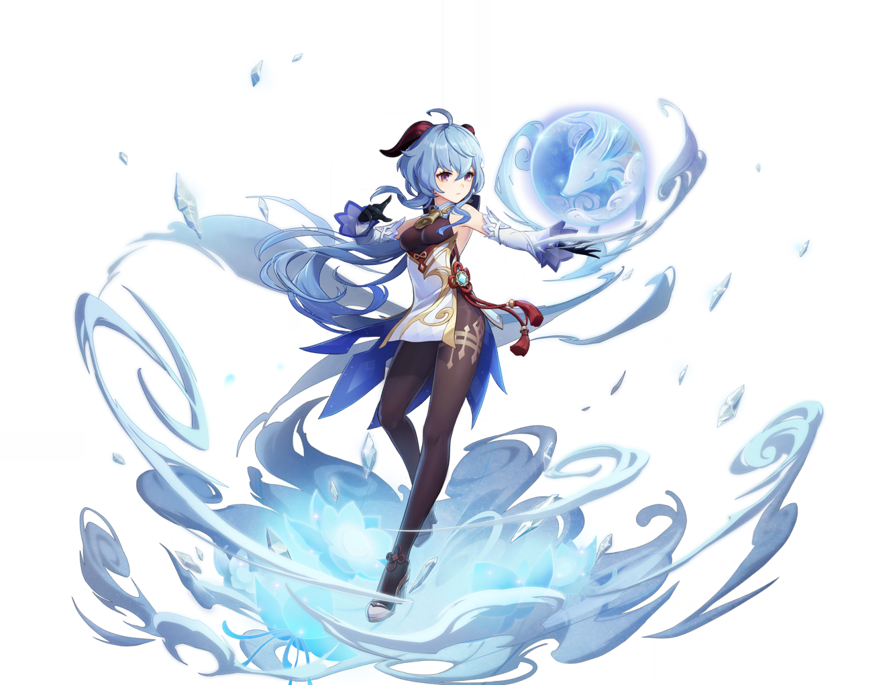

Ascensions

Jade Sliver x1

Jade Fragment x9
Jade Chunk x9

Jade Gemstone x6

Hoarfrost Core x46
Whopperflower Nectar x18
Shimmering Nectar x30

Energy Nectar x36
Qingxin x168
Talents
Teaching of Diligence x9
Guide to Diligence x63
Philosophies of Diligence x114

Shadow of the Warrior x18

Whopperflower Nectar x18
Shimmering Nectar x66

Energy Nectar x93

Crown of Insight x3